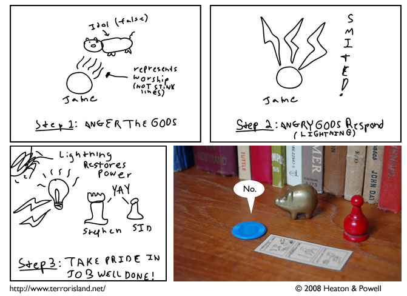

Strip #296
— Friday, May 2, 2008
The shading in Waiterman’s drawing really captures Jame’s personality.
Notes, Thoughts, &c.
Ben’s Notes
I only had to do the art for one panel this time. This is the sort of thing I like about the “collaboration” approach to webcomics.
Lewis’s Notes
It was really hard to do the art for panels one through three, because I had to reduce my hardcore art skillz for properly representing Waiterman’s level of skill. Such is my dedication to the craft of comicking.